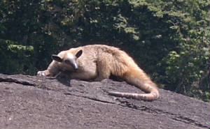
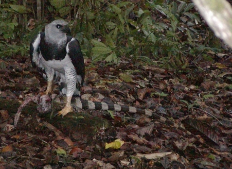

|
There are a huge variety of animals at Raleighvallen. We see many birds, fish and monkeys everyday. We would like
to share photos that we and our friends have taken.

|
| A small species of anteater called a southern tamandua |
The tamandua is arboreal, spending most of its time in trees. It digs ants, termites and bees out
of wood. It has no teeth and uses its tongue to lick insects from nests it has ripped open with its foreclaws.
It is often found near rivers; this one was on top of a big rock in the middle of the river! Jean Emmons, in her book Neotropical
Rainforest Mammals, says that, "they are accompanied by a dense cloud of flies and mosquitos". This one had
just had a bath and looked very clean. He was gone when we came by several hours later.

|
| Harpy eagle photo by Adam Reeck, 2004 |
We have seen a harpy before but never got a picture
like this one.A very good friend of ours named Adam Reeck, who was visiting us, went walking one early morning (without me) when
he came across this harpy having an iguana for his early morning breakfast. Harpy eagles are one of the largest eagles
in the world. It eats monkeys, large birds, and other animals that live in trees. They make very big nests, grow to about
36 - 40 inches (1m) in length, and can fly at a speed of 50mph.
|